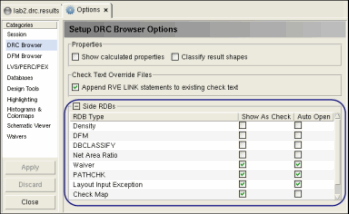

Viewing Auxiliary Databases
The commands Net Area Ratio, Density, Layout Input Exception RDB, and several DFM operations can cause Calibre nmDRC to save an auxiliary results database (RDB). These auxiliary databases, or side RDBs, can be viewed in Calibre RVE for DRC.
When Calibre RVE reads a DRC results
database with one or more auxiliary databases present, the auxiliary
database icon  is displayed
on the summary bar for the database. You can open side RDBs manually,
or configure Calibre RVE to open them automatically.
is displayed
on the summary bar for the database. You can open side RDBs manually,
or configure Calibre RVE to open them automatically.
Prerequisites
An ASCII DRC Results database with an auxiliary database is open in Calibre RVE for DRC.
Procedure
- (Optional) Set viewing preferences
for side RDBs as follows:
- Click the Options
 button
to open the Options tab.
button
to open the Options tab. - Select the DRC Browser category,
- Expand the Side RDBs area,
as shown.
- Select the viewing preference
for each RDB type using the checkboxes:
Show as Check — Show the RDB type as a check in the tree view.
Auto Open — Automatically open all side RDBs of this type.
- Click the Options
- Use one of these methods to
manually open an auxiliary database:
Click the additional files icon
 to display a dropdown
list with the available databases.
to display a dropdown
list with the available databases. Select the side RDB in the tree view, then click the RDB hyperlink listed in the check text pane for the RDB check, as shown in Figure 1.
Also see the rule check comment “RDB”; this rule check comment provides another way to display the RDB hyperlink in the check text pane.
Select File > Open Database and specify the RDB filename.
DFM RDBs are only listed in the auxiliary database dropdown list if the RDB is created from a Calibre Interactive run. If the DFM RDBs are not listed in the auxiliary database dropdown list, you can still open them or any other additional database with File > Open Database.